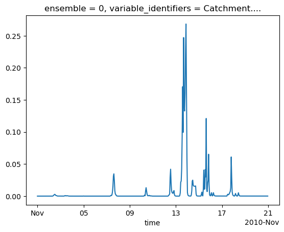
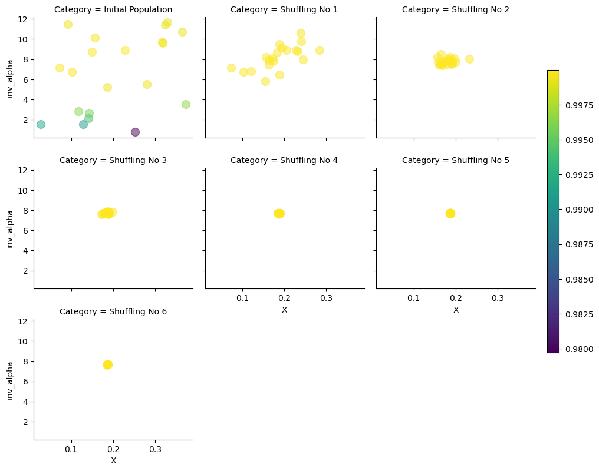
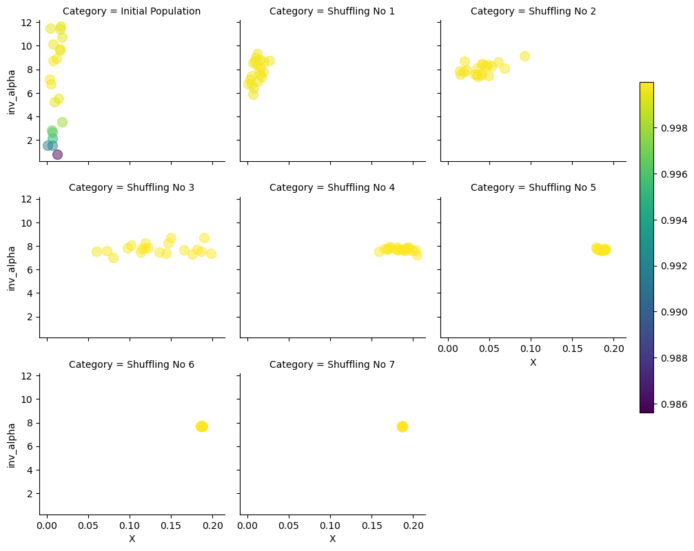

Linear Muskingum channel routing model - constrained subcatchment calibration¶
Purpose¶
This vignette focuses on explaining how to calibrate the linear version of Muskingum jointly across river reaches, respecting stability constraints across all these reaches. The second part of the document is an indepth explanation of the scheme that is also used as a reference for unit testing swift.
from swift2.doc_helper import pkg_versions_info
print(pkg_versions_info("This document was generated from a jupyter notebook"))
This document was generated from a jupyter notebook on 2025-03-27 17:26:28.496798
swift2 2.5.1
uchronia 2.6.2
Guidelines for global calibration of Muskingum constrainted parameters¶
# Only temporary, under construction...
import swift2.wrap.swift_wrap_generated as swg
import xarray as xr
from cinterop.timeseries import (
TIME_DIMNAME,
pd_series_to_xr_series,
slice_xr_time_series,
xr_ts_end,
xr_ts_start,
)
from swift2.doc_helper import *
from swift2.parameteriser import *
from swift2.play_record import *
from swift2.simulation import *
from swift2.statistics import *
from swift2.system import *
from swift2.utils import *
# from swift2.prototypes import extract_optimisation_log
from uchronia.time_series import get_item
For this example we will use data derived from the South Esk catchment in Tasmania.
Baseline model structure¶
We load and configure the model simulation in the next section, without detailed explanation; please read other introductory vignettes if this is unclear.
model_id = 'GR4J'
site_id = 'South_Esk'
simulation = sample_catchment_model(site_id=site_id, config_id='catchment')
simulation = swap_model(simulation, 'MuskingumNonLinear', 'channel_routing')
# # revert back to derfautl values as expected from sample simulation..
# sc = 1 # reach slope in m/m
# n = 1 # default Manning's parameter value for the reach
# f = 1 # "Fudge factor" to allow for a different range of Alpha values.
# oneHour = 1
# delt = oneHour
se_climate = sample_series(site_id=site_id, var_name='climate')
se_flows = sample_series(site_id=site_id, var_name='flow')
play_input(simulation, se_climate)
set_simulation_span(simulation, xr_ts_start(se_climate), xr_ts_end(se_climate))
set_simulation_time_step(simulation, 'hourly')
configure_hourly_gr4j(simulation)
We can get a topologic view of the model setup (albeit crowded as this is a fairly large catchment).
(Note: may not render yet through GitHub)
We cookie cut to get a subcatchment near the headwaters.
from swift2.model_definitions import *
# from graphviz import Digraph
subsim = subset_catchment(simulation, 'node.5')
subsim
Simulation wrapper for a CFFI pointer handle to a native pointer of type id "MODEL_SIMULATION_PTR"
We configure the routing scheme to be linear (parameter N set and fixed to 1)
link_ids = mk_full_data_id('link', get_link_ids(subsim))
set_state_value(subsim, mk_full_data_id(link_ids, 'N'), rep(1.0, len(link_ids)))
Let's have a look at the link properties and other default routing parameters
lnkpnames = ['Length', 'f', 'ManningsN', 'Slope', 'N', 'X', 'Alpha']
get_state_value(subsim,mk_full_data_id('link.1', lnkpnames))
{'link.1.Length': 6140.0,
'link.1.f': 1.0,
'link.1.ManningsN': 1.0,
'link.1.Slope': 1.0,
'link.1.N': 1.0,
'link.1.X': 0.1,
'link.1.Alpha': 1.0}
X is between 0 and 0.5, without stability constraints. Setting a default Alpha is... trickier.
set_state_value(subsim, mk_full_data_id(link_ids, 'X'), rep(1e-6, len(link_ids)))
set_state_value(subsim, mk_full_data_id(link_ids, 'Alpha'), rep(0.0005, len(link_ids)))
If we look at the subcatchment outflow in this configuration, it is a series of unfeasible values - at least one link was in an unfeasible zone for (Alpha, X)
from swift2.const import CATCHMENT_FLOWRATE_VARID
var_id = CATCHMENT_FLOWRATE_VARID
catOutflowId = 'subarea.1.OutflowRate'
record_state(subsim,var_id)
record_state(subsim,catOutflowId)
exec_simulation(subsim)
someFlow = get_recorded(subsim, var_id)
<xarray.DataArray (variable_identifiers: 1, ensemble: 1, time: 5)> Size: 40B array([[[0., 0., 0., 0., 0.]]]) Coordinates: * ensemble (ensemble) int64 8B 0 * time (time) datetime64[ns] 40B 2010-11-01 ... 2010-11-01... * variable_identifiers (variable_identifiers) object 8B 'Catchment.Streamf...
We can double-check that the subarea does produce runoff yield; the links are where the model does not work yet.
{'node.5.InflowRate': 7.942047038196456e-05,
'node.5.InflowVolume': 0.28591369337507244,
'node.5.AdditionalInflowRate': 0.0,
'node.5.OutflowRate': 7.942047038196456e-05,
'node.5.OutflowVolume': 0.28591369337507244}
<xarray.DataArray (variable_identifiers: 1, ensemble: 1, time: 5)> Size: 40B array([[[0., 0., 0., 0., 0.]]]) Coordinates: * ensemble (ensemble) int64 8B 0 * time (time) datetime64[ns] 40B 2010-11-01 ... 2010-11-01... * variable_identifiers (variable_identifiers) object 8B 'subarea.1.Outflow...
So, given that each routing link parameters Alpha and X are subject to constraint that vary depending on 'Length', 'f', 'ManningsN', 'Slope', how do we get a pair (Alpha, X) that globaly respect these constraints? This is not complex science but complicated enough to get wrong.
'swift' offers facilities to remove the error prone tedium. First, feasibleMuskingumBounds lists the extremas of the feasible (Alpha, X) parameter space.
{'min_alpha': np.float64(0.08143322475570032),
'max_x': np.float64(0.37382039573820397),
'alpha_for_max_x': np.float64(0.13004771187286124)}
The numbers above can play a crucial role when setting up an optimiser for this model; more on this soon.
oneHour = 1
pSpecMusk = pd.DataFrame(dict(Name = ['X', 'Alpha'],
Value = [akbounds['max_x'] / 2, akbounds['alpha_for_max_x']],
Min= [1.0E-06, akbounds['min_alpha']],
Max = [akbounds['max_x'], 1e5])
)
# Basic parameteriser
def pzm(simulation, pSpecs=pSpecMusk):
akbounds = feasible_muskingum_bounds(simulation, 1)
p_musk = create_parameteriser('generic links',pSpecs)
return p_musk
# Wrapper parameteriser, with constraints added around.
def pzc(simulation, pSpecs=pSpecMusk):
p_musk = pzm(simulation, pSpecs)
p_musk_c = create_muskingum_param_constraints(p_musk, oneHour, "Alpha", "X", simulation)
return p_musk_c
pp = parameteriser_as_dataframe
| Name | Value | Min | Max | |
|---|---|---|---|---|
| 0 | X | 0.186910 | 0.000001 | 0.37382 |
| 1 | Alpha | 0.130048 | 0.081433 | 100000.00000 |
| Name | Value | Min | Max | |
|---|---|---|---|---|
| 0 | X | 0.186910 | 0.000001 | 0.373820 |
| 1 | Alpha | 0.130048 | 0.100153 | 0.260095 |
Let's get a trace of the subcatchment outflow, as a synthetic data to calibrated against.
count 4.800000e+02
mean 6.164971e-03
std 2.694368e-02
min 0.000000e+00
25% 8.691205e-07
50% 8.687524e-05
75% 6.349944e-04
max 2.682614e-01
dtype: float64
We do now get a valid outflow since (Alpha-K) respects feasibility constraints on all links.

Setting up calibration¶
def c(*args):
return np.array([x for x in args])
pSpecMaxBounds = pd.DataFrame(dict(
Name = c('X', 'Alpha'),
Value = c(1.0E-6, akbounds['alpha_for_max_x']), # IMPORTANT to use these values.
Min= c(1.0E-6, akbounds['min_alpha']),
Max = c(akbounds['max_x'], 1e6), # Alpha_max can get very large.
)
)
pp(pzc(subsim, pSpecMaxBounds))
| Name | Value | Min | Max | |
|---|---|---|---|---|
| 0 | X | 0.000001 | 0.000001 | 0.373820 |
| 1 | Alpha | 0.130048 | 0.081433 | 48614.487117 |
If we were to use another (X, Alpha) point e.g. X=0.1869102, the feasible bounds for Alpha change drastically. If an optimiser samples this for an initial population of points (SCE), this is unnecessarily restrictive for Alpha. Many hydrological calibration schemes were designed without consideration on feasible space that are not hypercubes.
| Name | Value | Min | Max | |
|---|---|---|---|---|
| 0 | X | 0.186910 | 0.000001 | 0.373820 |
| 1 | Alpha | 0.130048 | 0.100153 | 0.260095 |
While calibrating in the (Alpha,X) space is possible, perhaps preferable in some cases, (1/Alpha,X) has a triangular shaped feasibility region that may be easier to handle for optimisers that work with geometric transformation in the parameter space (SCE). Swift can add this on top of the constrained calibration:
# (X, 1/Alpha) parametrizer with dynamically constrained min/max bounds.
def pzer_inv(simulation, pSpecs=pSpecMusk):
p_musk_c = pzc(simulation, pSpecs)
p_musk_inv_a = wrap_transform(p_musk_c)
add_transform(p_musk_inv_a, 'inv_alpha', 'Alpha', '1/x')
return p_musk_inv_a
p = pzer_inv(subsim, pSpecMaxBounds)
pp(p)
| Name | Value | Min | Max | |
|---|---|---|---|---|
| 0 | inv_alpha | 7.689486 | 0.000021 | 12.279988 |
| 1 | X | 0.000001 | 0.000001 | 0.373820 |
We check that backtransforming to (Alpha-X) works:
| Name | Value | Min | Max | |
|---|---|---|---|---|
| 0 | X | 0.000001 | 0.000001 | 0.373820 |
| 1 | Alpha | 0.130048 | 0.081433 | 48614.487117 |
objectiveId = 'NSE'
objective = create_objective(subsim, var_id, someFlow, objectiveId, xr_ts_start(someFlow), xr_ts_end(someFlow))
{'scores': {'NSE': 0.9997748469565144},
'sysconfig': Name Value Min Max
0 inv_alpha 7.689486 0.000021 12.279988
1 X 0.000001 0.000001 0.373820}
#termination = swift::CreateSceMaxRuntimeTerminationWila_R(1/60)
termination = create_sce_termination_wila('relative standard deviation', c('0.001','0.0167'))
npars = 2
sce_params = sce_parameter(npars)
optimiser = create_sce_optim_swift(objective,termination_criterion = termination, population_initialiser = p,sce_params = sce_params)
calib_logger = set_calibration_logger(optimiser,"dummy")
CPU times: user 999 ms, sys: 4.36 ms, total: 1 s
Wall time: 324 ms
from swift2.vis import OptimisationPlots
shuffleLogs = opt_log.subset_by_message(pattern = "Initial.*|Shuffling.*")
shuffleLogs.data
| Category | CurrentShuffle | Message | NSE | X | inv_alpha | PointNumber | |
|---|---|---|---|---|---|---|---|
| 0 | Initial Population | Initial Population | 0.999286 | 0.330241 | 11.636989 | 1 | |
| 1 | Initial Population | Initial Population | 0.979734 | 0.251643 | 0.752518 | 2 | |
| 2 | Initial Population | Initial Population | 0.993863 | 0.141551 | 2.133362 | 3 | |
| 3 | Initial Population | Initial Population | 0.999939 | 0.149201 | 8.721001 | 4 | |
| 4 | Initial Population | Initial Population | 0.995707 | 0.142863 | 2.626987 | 5 | |
| ... | ... | ... | ... | ... | ... | ... | ... |
| 1117 | Shuffling No 6 | Shuffling No 6 | 1.000000 | 0.186814 | 7.690154 | 1118 | |
| 1118 | Shuffling No 6 | Shuffling No 6 | 1.000000 | 0.186973 | 7.686830 | 1119 | |
| 1119 | Shuffling No 6 | Shuffling No 6 | 1.000000 | 0.186925 | 7.690300 | 1120 | |
| 1120 | Shuffling No 6 | Shuffling No 6 | 1.000000 | 0.187077 | 7.691259 | 1121 | |
| 1121 | Shuffling No 6 | Shuffling No 6 | 1.000000 | 0.186800 | 7.694139 | 1122 |
140 rows × 7 columns
v = OptimisationPlots(shuffleLogs)
g = v.shuffles('X', 'inv_alpha', obj_lims = [0.0,1.0])
plt.gcf().set_size_inches(10,8)

| NSE | inv_alpha | X | |
|---|---|---|---|
| 0 | 1.0 | 7.689032 | 0.186874 |
| 1 | 1.0 | 7.690300 | 0.186925 |
| 2 | 1.0 | 7.690382 | 0.186887 |
| 3 | 1.0 | 7.690224 | 0.186842 |
| 4 | 1.0 | 7.689243 | 0.186813 |
| Name | Value | Min | Max | |
|---|---|---|---|---|
| 0 | inv_alpha | 7.689032 | 3.844007 | 9.985182 |
| 1 | X | 0.186874 | 0.000001 | 0.373798 |
| Name | Value | Min | Max | |
|---|---|---|---|---|
| 0 | X | 0.186874 | 0.000001 | 0.373798 |
| 1 | Alpha | 0.130055 | 0.100148 | 0.260145 |
Seeding the optimisation point population with restrictive constraint bounds¶
This section is a counter-example. Do not do this.
Say, instead of seeding with alpha set to alpha_for_x_max (0.37382040) we instead use a value close to its global minimum, 0.083:
pSpecRestrictiveBounds = pSpecMaxBounds
pSpecRestrictiveBounds.loc[pSpecRestrictiveBounds.Name == 'Alpha', 'Value'] = 0.083
| Name | Value | Min | Max | |
|---|---|---|---|---|
| 0 | X | 0.000001 | 0.000001 | 0.37382 |
| 1 | Alpha | 0.083000 | 0.081433 | 1000000.00000 |
| Name | Value | Min | Max | |
|---|---|---|---|---|
| 0 | inv_alpha | 12.048193 | 0.000021 | 12.279988 |
| 1 | X | 0.000001 | 0.000001 | 0.018877 |
X is now much more constrained in its feasible range, and initializing a population fails to cover large sections of the feasible triangle. If used in the optimiser (uniform random sampling)
termination = create_sce_termination_wila('relative standard deviation', c('0.001','0.0167'))
sce_params = get_default_sce_parameters()
npars = 2
sce_params = sce_parameter(npars)
optimiser = create_sce_optim_swift(objective,termination_criterion = termination, population_initialiser = p,sce_params = sce_params)
calib_logger = set_calibration_logger(optimiser,"dummy")
calib_results = execute_optimisation(optimiser)
v = OptimisationPlots(shuffleLogs)
g = v.shuffles('X', 'inv_alpha', obj_lims = [0.0,1.0])
plt.gcf().set_size_inches(10,8)

# shuffleLogs = mhplot::subsetByCategory(opt_log$data, pattern = "Initial.*|Shuffling.*")
# mhplot::plotShuffles(shuffleLogs, 'X', 'inv_alpha', obj_lims = (0:1))
SCE does manage to converge towards the optimum, but it takes a larger number of iterations. Anecdotally, we observed cases where the calibration does fail to go near the optimum, when interplaying with a convergence criterion configured for "leniency".
Detailed explanation and unit test design¶
See other document muskingum_multilink_calibration_explanation.ipynb